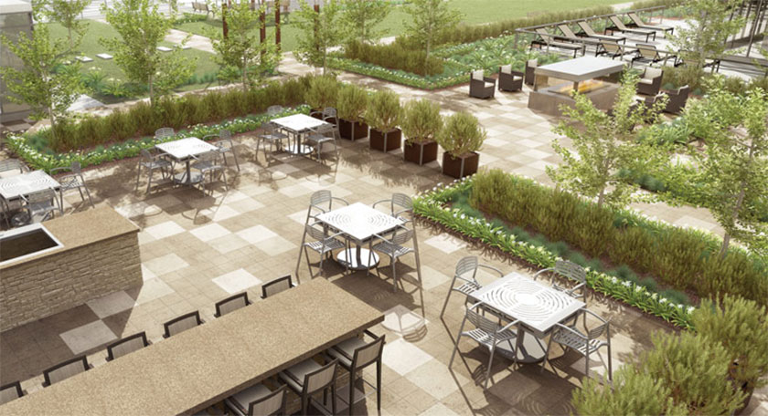

Alberta EcoRoof Initiative Studying Green Roof Technology Benefits
Imagine...
Imagine yourself sitting in a garden surrounded by lush, diverse plantings with grass under your toes, birds in the trees . . . and a view over your neighbourhood. This is the kind of future green roof proponents see in store for us.
It’s common practice in Europe to create garden spaces on the tops of buildings. Germany has a long history with roof-top garden projects. It has been estimated that by 2003 over 15 per cent of all flat roofs in the country had been greened. The concept is beginning to intrigue Canadians.
In Calgary a blue ribbon consortium of public organizations and corporate bodies has come together as the "Alberta EcoRoof Initiative" to develop and study a green roof operation and learn more about what works well, and what works better, in the use of this technology.
Roof-top Patios
Urban gardeners will be familiar with roof-top patios that replace barren and wasted space with much needed green space. Such a patio is a simple example of an "intensive" green roof project which typically accommodates use by people. The soil, or growing medium, in such a project would be more than six inches deep so a wide diversity of plants can be grown, including shrubs and trees. In some cases the project can be elaborate enough to include traditional landscape elements such as pathways, ponds and lighting. This sort of green roof is virtually indistinguishable from a typical landscape, except that it’s high above the ground. Intensive green roofs need substantial maintenance and are usually quite expensive.
"Extensive green roof projects are much less complex and often look like a simple carpet of plant material laid onto the roof surface. The soil depth is shallower so that fewer types of plants can be used.” Grasses, herbaceous perennials and succulents are typically planted in these projects. Extensive green roofs are less expensive and not usually accessible to people, except for maintenance work. They are found most commonly on smaller buildings or inaccessible roof tops.
 Source:http://mysquareonecondo.ca/Mississauga/the-park-residences-condosBenefits
Regardless of the style, though, the benefits are considerable. Besides being dramatically more attractive than a typical roof, these green roofs increase biodiversity and create much needed habitat for local insects and bird species. Green roofs effectively reduce the heat-island effects felt in dense urban settings. They also buffer noise pollution and moderate extreme temperature conditions for the building below. A green roof extends the lifetime of a roof membrane and has a significant impact on storm water run-off. The plant material utilizes rain water that would typically be lost; the green roof system itself absorbs water, reducing the overall quantity of runoff. The rate of run-off is slowed and the quality is improved. These are significant impacts for climates prone to severe thunder storms.
An Interdisciplinary Approach
Green roofs can be incorporated into the planning of a new building or an existing roof can be retrofitted. The basic components are the same: a waterproof barrier to protect the roof surface; a layer designed to inhibit root growth; a drainage system; a growing medium and appropriate plant material. In planning a green roof, an interdisciplinary approach is needed, involving people from many fields of expertise. This aspect appeals to Kerry Ross, an architect with Stantec in Calgary.
{kind=link}
Green roof
A green roof or living roof is a roof of a building that is partially or completely covered with vegetation and a growing medium, planted over a waterproofing membrane. It may also include additional layers such as a root barrier and drainage and irrigation systems. Container gardens on roofs, where plants are maintained in pots, are not generally considered to be true green roofs, although this is debated. Rooftop ponds are another form of green roofs which are used to treat greywater.
Green roofs serve several purposes for a building, such as absorbing rainwater, providing insulation, creating a habitat for wildlife, increasing benevolence and decreasing stress of the people around the roof by providing a more aesthetically pleasing landscape, and helping to lower urban air temperatures and mitigate the heat island effect. They effectively utilize the natural functions of plants to filter water and treat air in urban and suburban landscapes.There are two types of green roof: intensive roofs, which are thicker, with a minimum depth of 12.8 cm (5.0 in), and can support a wider variety of plants but are heavier and require more maintenance, and extensive roofs, which are shallow, ranging in depth from 2 cm (0.79 in) to 12.7 cm (5.0 in), lighter than intensive green roofs, and require minimal maintenance.
The term green roof may also be used to indicate roofs that use some form of green technology, such as a cool roof, a roof with solar thermal collectors or photovoltaic panels. Green roofs are also referred to as eco-roofs, oikosteges, vegetated roofs, living roofs, greenroofs and VCPH(Horizontal Vegetated Complex Partitions).
Commercial Projects
Stantec’s corporate headquarters in Edmonton is home to a green roof, one of the first in the city. In Calgary the company is a partner in the Alberta EcoRoof Initiative along with groups such as Soprema (suppliers of green roof systems), Colliers International, the University of Calgary faculty of environmental design, the city of Calgary and Calgary Technologies Inc.
Dave McKillop is manager of Calgary Technologies’ Alistair Ross Technology Centre where the green roof has been installed for the study project. Explaining the project, Dave says the concept of green roofs "won’t go mainstream until someone has the numbers. The study project will enable EcoRoof Initiative members to collect data based on varying soil mixes, depth of growing medium, plant species, moisture retention systems and other factors. The information will be useful in developing new green roof projects around the province and in particular for Calgary with its unique climatic conditions."
Kerry Ross has been involved with several green roof projects and is passionate about the concept. Late last summer she was busy putting in plants for the project’s second phase, using a wide range of Alberta native species, including wild strawberries, bearberry, gaillardia, green needle grass, fleabane and golden rod. Pam and Ken Wright from Bow Point Nurseries supplied some of the plants. Around Alberta, other green roof projects are now in place. New Cave Avenue and Bear Street developments by Arctos and Bird in Banff have incorporated green roof projects on both the residential and commercial spaces. Other commercial projects include the Chinook Credit Union in Strathmore, the Edmonton Waste Management Center and First Choice Credit and Savings Union in Lethbridge. More green roofs may appear at locations such as the Community Learning Campus in Olds and the University of Alberta’s Heart Institute. Residential projects are less common, but Soprema green roof systems were used on a residential home in south Calgary and Kerry has a test roof of her own in her back yard.
It’s conceivable with these developments that the benefits of green roofs might soon become better known, making them in time a normal component of building design in our society.
About the Author
Jane has a BA from the University of Victoria in Microbiology and Environmental Studies and a Diploma in Horticulture from Olds College. She worked in the landscape maintenance and development industry for five years before joining the Calgary Zoo and Botanical Gardens, first as the Schoolyard Naturalization Project leader, then as Botanical Education Coordinator and Manager of Continuing Education. Jane is currently the Manager, Botanic Gardens and Wetland Treatment Facility at Olds College. Jane is a regular writer and speaker on a variety of gardening topics and her love of learning and infectious enthusiasm for all aspects of horticulture is evident in all that she does.
Return to mian navigationReference
Reksten , Jane . "Alberta EcoRoof Initiative Studying Green Roof Technology Benefits." . Local Home &
Gardener Living, Pegasus Publications Inc., n.d. Web. 28 May 2014.
https://www.localgardener.net/pages.php?lang=en&page=articles&action=view&vid=158.
Return to mian navigation